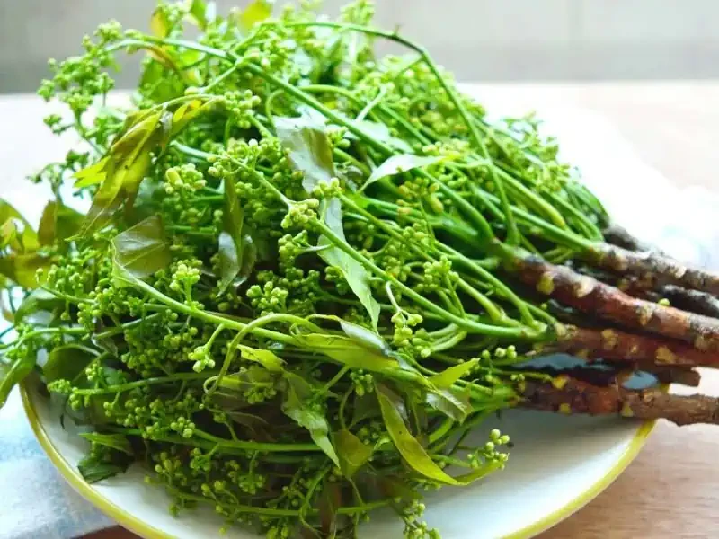

ประเภทไม้ต้น
อบเชย
เป็นเครื่องเทศที่มีกลิ่นหอม ได้มาจากเปลือกไม้ชั้นในที่แห้งแล้วของต้นอบเชย อบเชยมีหลายชนิด มักจะเรียกตามแหล่งเพาะปลูกเช่น อบเชยจีน อบเชยลังกา อบเชยญวน เป็นต้น นอกจากนำมาใส่ในขนมหรือเครื่องดื่มเพื่อให้มีกลิ่นหอมแล้ว ยังมีผู้นำอบเชยมาใช้ในการรักษาโรคเบาหวาน
สรรพคุณ :
- อบเชยเทศมีสรรพคุณทางยาใกล้เคียงกับอบเชยไทย ตามตำราสรรพคุณยาโบราณกล่าวว่า อบเชยมีกลิ่นหอม รสสุขุม (รสกลางๆ) มีสรรพคุณบำรุงดวงจิต แก้อ่อนเพลีย แก้ใจหวิว ใจสั่น บำรุงกำลัง บำรุงร่างกาย คนโบราณจึงนิยมนำอบเชยเป็นส่วนประกอบของยาหอม โดยจะนำสมุนไพรที่เป็นส่วนประกอบของยาหอม ไปตากแห้ง แล้วบดเป็นผงยา เมื่อมีอาการวิงเวียน หรืออ่อนเพลีย ก็จะนำผงยาไปละลายในน้ำต้มสุก แล้วค่อยๆจิบจะหมดแก้ว แต่ปัจจุบันมีการประยุกต์ใช้ โดยนำผงยาหอม ไปผสมกับพิมเสนและการบูร ห่อในผืนผ้าขนาดเล็ก แล้วใส่ห่อผ้าเข้าไปในกรักยาดม ใช้ดมเวลารู้สึกจะเป็นลม หรือวิงเวียน
- ใบอบเชยเทศ ใช้กันมาแต่โบราณ ทั้งเป็นยาบำรุงกำลังและบำรุงร่างกาย แก้จุกแน่นและท้องเสีย นิยมรับประทานในรูปแบบต้มกับน้ำเดือด
- ในประเทศอินเดียและศรีลังกา มีการใช้อบเชยเทศเป็นยาพื้นบ้านรักษาโรคเบาหวานและแก้ไข้สันนิบาต มีวิธีรับประทานหลายรูปแบบ ทั้งแบบที่นำผงอบเชยไปปั้นกับน้ำผึ้งเป็นเม็ดลูกกลอน หรือนำอบเชยมาต้มดื่ม
- ใช้เป็นยานัตถุ์ แก้อาการปวดศีรษะ แก้อาการคัดจมูก ทำให้หายใจสะดวก
- รากและใบมีกลิ่นหอม ใช้ทำน้ำต้ม ช่วยบรรเทาอาการไข้ที่เกิดขึ้นหลังจากคลอดบุตร แก้โรคหนองใน
- เป็นส่วนประกอบของยาขับลม แก้ท้องอืดเฟ้อ ขับผายลม ปัจจุบันนำมาผลิตในรูปแบบยาน้ำ เช่น ยาธาตุอบเชย เป็นต้น

สะเดา
เป็นไม้ยืนต้นขนาดกลาง สูง 20-25 เมตร เปลือกต้นสีน้ำตาลเทา ค่อนข้างหนา แตกเป็นร่อง ใบเป็นใบประกอบขนนก ออกเรียงสลับ ใบรูปหอก โคนใบโค้งมนไม่เท่ากัน ขอบใบเป็นจักคล้ายฟันเลื่อย ปลายใบเรียวแหลม แผ่นใบเรียบ ใบมีสีเขียวเข้มเป็นมัน
ดอกออกเป็นช่อ ออกที่ปลายกิ่งขณะแตกใบอ่อน ดอกสีขาวนวลหรือสีเทา มักจะออกดอกในช่วงเดือนธันวาคม-มีนาคม ในดอกมีน้ำมันหอมระเหย ทำให้มีกลิ่นหอมอ่อนๆ
ผลสะเดามีลักษณะกลมรีคล้ายผลองุ่น ขนาดประมาณ 1-2 เซนติเมตร ผลอ่อนสีเขียว ผลสุกมีสีเหลืองอมเขียว
เมล็ดมีลักษณะกลมรี ผิวค่อนข้างเรียบ มีรอยแตกเป็นร่องเล็กๆ ตามยาว สีเหลืองอ่อนหรือสีน้ำตาล
ในประเทศไทยพบสะเดา 3 ชนิด ได้แก่ สะเดาอินเดีย สะเดาช้าง และสะเดาไทย ทั้งสามชนิดมีความคล้ายคลึงกัน นำมาใช้ทดแทนกันได้
สรรพคุณ :
- ใบ : มีรสขมฝาดเย็น รับประทานเป็นอาหารหรือต้มดื่ม ช่วยบำรุงไฟธาตุ ขับน้ำย่อย รักษาแผลในกระเพาะอาหาร แก้ไข้ แก้พยาธิ แก้ร้อนในกระหายน้ำ บำรุงโลหิตและน้ำดี ช่วยลดความเครียด คลายกังวล เป็นยาระบายอ่อนๆ น้ำคั้นจากใบสามารถนำมาเป็นยาใช้ภายอก สำหรับรักษาบาดแผล น้ำร้อนลวก ผิวหนังอักเสบ พอกฝี
- ดอก : มีสารกลุ่มไกลโคไซด์และสารที่มีรสขม ช่วยบำรุงธาตุ แก้พิษ ขับลม
- ก้านและก้านใบ : ช่วยรักษาไข้ ช่วยให้นอนหลับได้ดีขึ้น
- เปลือกต้น : ใช้แก้ไข้ แก้บิดมูกเลือด แก้ท้องเสีย ช่วยให้เจริญอาหาร และสารสกัดจากเปลือกต้นสามารถนำมาใช้เป็นยาภานอก ทารักษาริดสีดวงทวารได้
- แก่น : แก้อาเจียน ขับเสมหะ
- กระพี้ : แก้ถุงน้ำดีอักเสบ
- ราก : ช่วยแก้โรคผิวหนัง แก้เสมหะ แก้ไข้
- ยาง : ใช้ดับพิษร้อนในร่างกาย
- ผล : มีสารให้รสขมชื่อ บากายานิน (Bakayanin) สามารถใช้เป็นยาถ่ายพยาธิ ยาระบาย รักษาริดสีดวงทวาร
- น้ำมันจากเมล็ด : เป็นสารที่ให้รสขม มีชื่อว่ามาร์โกสิกแอซิด (Margosic acid) 45% และสารนิมบิดิน (Nimbidin) ใช้เป็นยาภายนอก รักษาโรคผิวหนัง และสามาราถนำมาใช้เป็นยาฆ่าแมลงได้